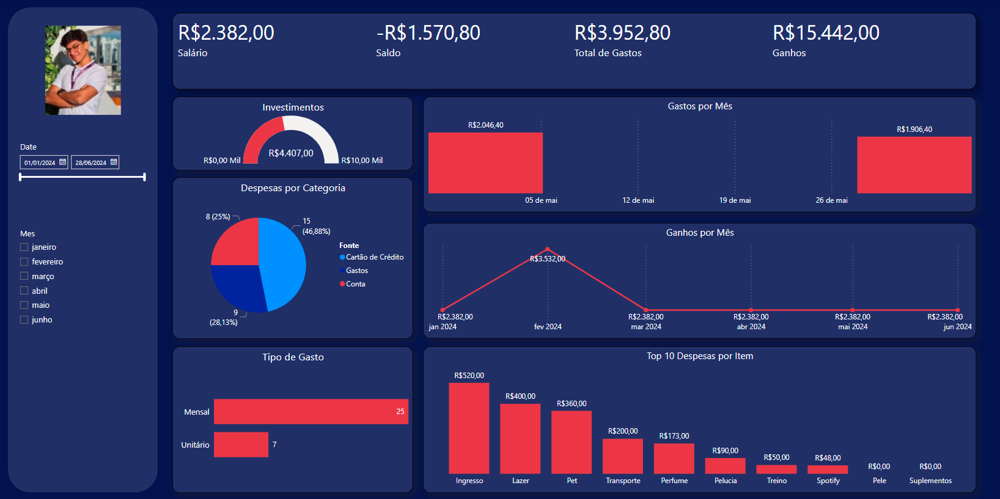
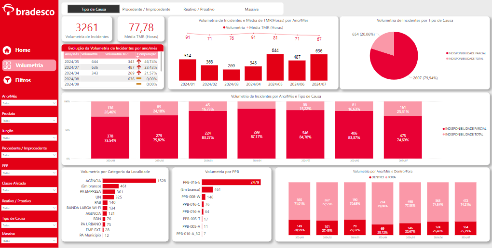
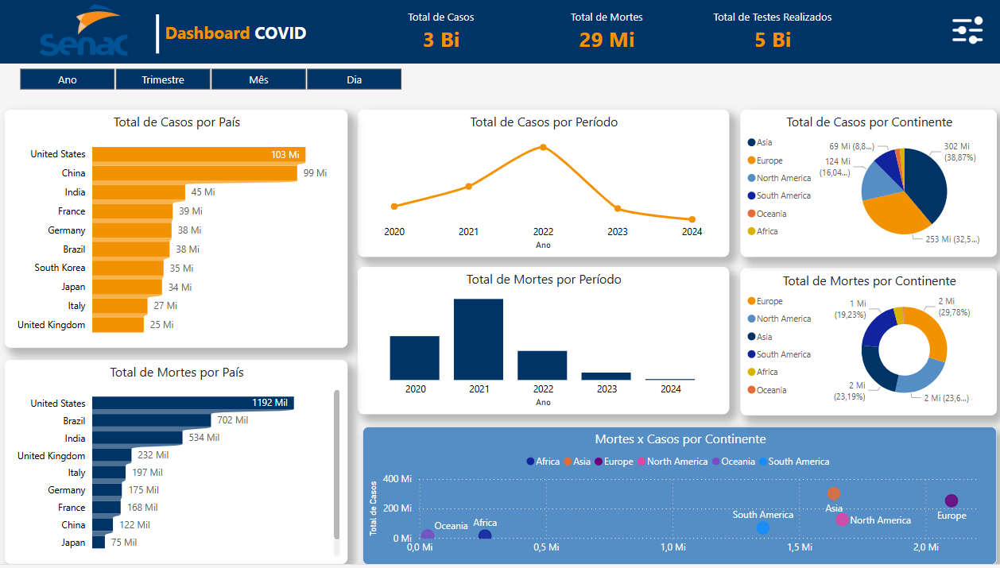
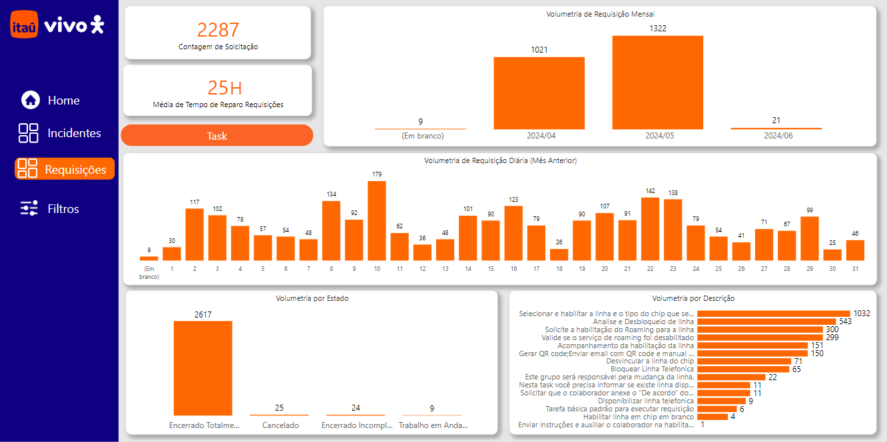
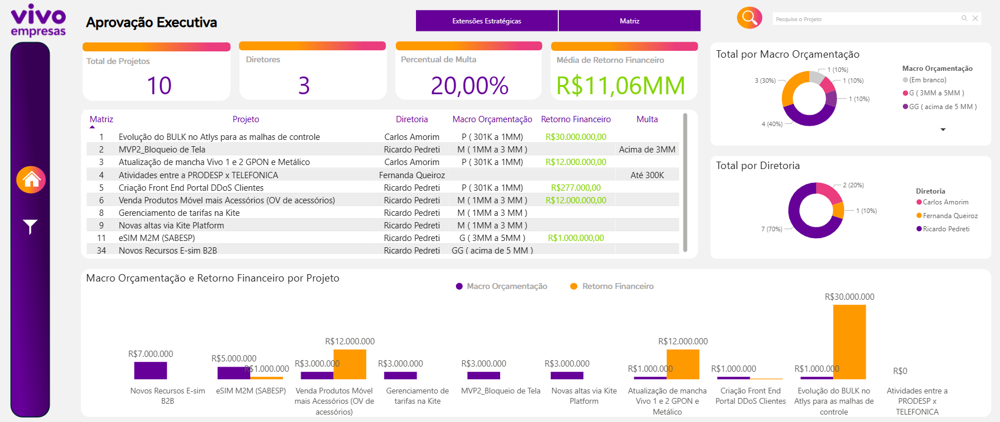

Especialista em Engenharia de Dados e Analytics, focado na construção de pipelines escaláveis, modelagem avançada em SQL, automações com Python e dashboards executivos em Power BI.
Profissional focado em resultados com sólida experiência na concepção e implementação de soluções de dados end-to-end — desde a extração de dados brutos, modelagem de esquemas e consumo de APIs REST até automação de pipelines ETL em Python e desenvolvimento de dashboards analíticos executivos.
Atualmente focado em Marketing Analytics na Vivo e expandindo meus conhecimentos em Engenharia de Machine Learning (Pós-graduação na FIAP), conectando necessidades complexas de negócios a arquiteturas de dados robustas e escaláveis.
Atuação estratégica em Marketing Analytics através do desenvolvimento de pipelines de ingestão de dados, consumo de APIs complexas e otimização de consultas SQL. Construção de relatórios executivos e suporte a iniciativas de Machine Learning via preparação, validação de dados e engenharia de recursos.
Arquitetura e desenvolvimento de fluxos de automação ponta a ponta utilizando Power Apps, Power Automate e scripts em Python. Modelagem de dados relacionais em SQL e estruturação de conjuntos de dados analíticos para suporte à tomada de decisão.
Desenvolvimento e automação de soluções analíticas para a Alta Gestão utilizando Power BI, DAX, Power Query e Python. Otimização de rotinas de atualização e eliminação de gargalos em processos manuais.
Auditoria de qualidade e higienização de dados de incidentes, criação de consultas em SQL Server para alimentação de painéis operacionais e apresentação de indicadores estratégicos para stakeholders.
Suporte na gestão de acessos, controle e inventário de ativos de TI e auxílio nas rotinas de infraestrutura.
Seleção de pipelines de dados em Python, automações e dashboards analíticos no Power BI.
Aplicação web para precificação e gestão corporativa desenvolvida em Flask, contando com controle de acesso baseado em funções (RBAC), autenticação segura e integração com banco de dados relacional. Incorpora motor de parsing e leitura inteligente de documentos via framework Docling, além de interface responsiva customizada em HTML/CSS nativo com animações keyframe.
Pipeline de Engenharia de Dados para extração de grande volume de dados brutos a partir do Microsoft SQL Server. Realiza transformações complexas, higienização, validação de tipos de dados e estruturação via Python, re-injetando os conjuntos de dados otimizados nas tabelas de staging para consumo analítico.
Aplicação analítica interativa para exploração visual de dados qualitativos e quantitativos. Conta com filtragem cruzada (cross-filtering) dinâmica alimentada por Plotly, tabelas parametrizadas por categoria/gênero, navegação modular por abas e deploy contínuo em nuvem via Streamlit Cloud.
Ferramenta web para normalização de dados e pré-processamento de planilhas. Executa o upload em memória, parsing de múltiplos sheets via Pandas, consolidação automática de matrizes em vetor de coluna única e geração de arquivo CSV pronto para carga em sistemas legados.

Painel estratégico para análise de receita líquida, custos operacionais e margem EBITDA em tempo real.

Acompanhamento detalhado de KPIs da equipe, capacidade produtiva e desvio em relação às metas.

Análise de séries temporais e modelagem de tendências de propagação baseadas em dados públicos de saúde.

Análise do cumprimento de acordos de nível de serviço (SLA), volume de chamados e gargalos no atendimento.

Acompanhamento de marcos de entrega, orçamento e alocação de recursos em portfólios corporativos.
FIAP
Senac São Paulo